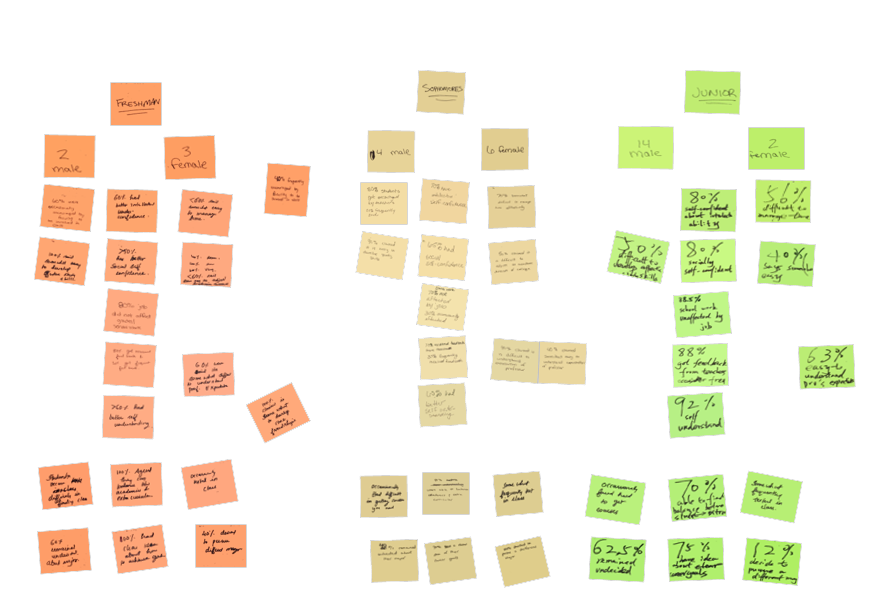
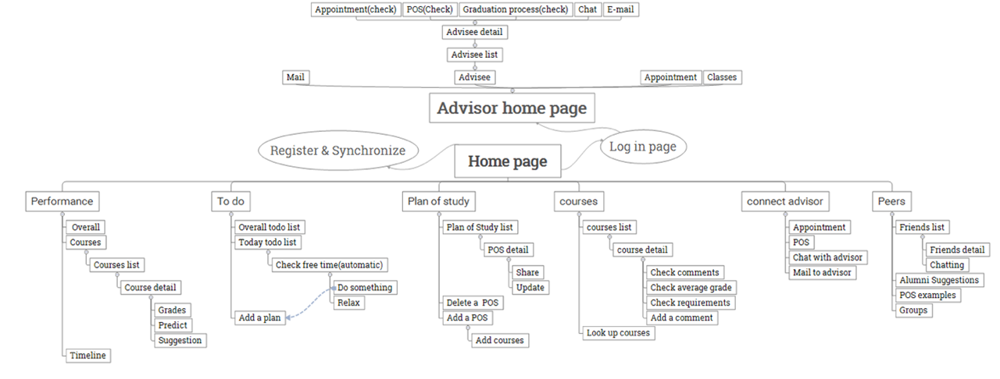

As students move forward in school they have a hard time developing affective study skills, managing their time, and seeking better advice, leaving students behind academically and unsure about their direction in their major
GOAL

With Guardian, we seek to develop a product that will help students oversee their academic curricula, in a manner that will track, remind, and manage their time here at Purdue University.
TEAM
Team size: 3
My role:
- UX Research (Data collection - Survey design, Recruitment, Secondary research, Affinity diagramming)
- UX Design (White board prototyping, Paper prototyping, Low and Hi-fidelity prototyping, Conceptual design)
- Evaluation (Usability evaluation moderator and participant guide, Usability testing execution, Analysis and Recommendations, Cognitive walk through)
- Management (Organizing meeting, Bringing team up to speed, Discussion with clients, Organizing meetings and Mentoring)
Research
We started with secondary research to understand the needs and current research. Then we identified potential participants and collected data as survey
METHOD OVERVIEW

{kind=link}
SURVEY
Collecting the data was not an easy task. We typically contacted hundreds of mechanical engineers and only a portion of them responded. But, richness in the data was crucial!

1. It was noted that as year increases student’s social self confidence increases as well
2. Students find difficulty in managing time in their second year, but recover fairly well in their junior year
3. Student’s ease of developing study skills decreases over the years and their difficulty in adjusting to academic demands slightly increased. as they progressed in their degrees
AFFINITY DIAGRAM
Based on the survey and secondary research, we conducted affinity diagramming session. All the teammates participated and we arranged the sticky notes in silence. This was fun! We later discussed the implications of the themes, that emerged from the session.
{kind=link}
PERSONA
We identified the themes and patterns in the previous step, but now what? There was a potential need to take a step back and see, who are we designing the application for. We re-visited the vision and goal, and with the help of affinity diagramming and other data points, we drafted the persona.

Click here to download the Formative research report
Conceptual Design
This has been a wonderful journey so far. We roamed around every corridor of Mechanical Engineering building to collect data, we spent hours to understand patterns and drafted the persona. Our goal was to dive into the design phase. The phase I love the most!
SCENARIO
We re-visited the vision and goal again. We took a brief look the notes and feedback we had created for ourselves and we took the persona for reference. Our markers and sketch pens started crafting the story, the much needed life for our application.

BRAINSTORM & SKETCHES
Conceptual design was used to create key components of the application. Typically, many ideas were generated in a short amount of time as a result of brainstorming. We also used design cards to increase the breadth of our ideas. Some of the critical cards we used were particularly challenging, some even seemed irrelevant, but our goal was not to be conservative. No idea is a bad idea!
{kind=link}
INFORMATION ARCHITECTURE
Now, we typically have so many ideas and pages, we needed to sort them correspondingly. Information architecture helped us to structure this mess!
{kind=link}
Prototype
We have design and the IA, bringing it to life was our next challenge. It was time to bring the magic and pizza!
PROTOTYPE

We created Low-fidelity prototype using Balsamiq - an interactive Rapid prototyping tool. After hours and hours of weaving concepts, the prototype was finally ready. However, a prototype without usability evaluation is just as wasteful as app development without UAT (was this a geeky joke?)
Fortunately, we had some users at our disposal. The prototype was subjected to an usability evaluation to find interaction related issues.
Click here to download the Interactive balsamiq mock-up
Usability Evaluation
Designing without testing is an invalid action. The prototypes were subjected to various types of evaluation, as mentioned below.
EVALUATION RESULTS

COGNITIVE WALKTHROUGH
We did not want to stop right at usability evaluation, because we are perfectionists (or basically people who love their job!). We conducted cognitive walk-through. The cognitive walkthrough leads to the evaluation of steps by the designer, to find any potential design issues. Call it unit testing if you will, this is powerful when combined with usability.
{kind=link}
{kind=link}
Click here to download the Design and Testing report
Click here to download the Concise project report
TOOLS
Powerpoint, Balsamiq, Visio, Photoshop, Autodesk SketchPro, Excel, SPSS for statistical analysis
TAKEAWAYS
Affinity diagramming: After studying qualitative research methods formally, I understood that affinity diagramming is in fact, a bi-product of thematic analysis and emerging theory analysis. This is a very powerful tool, and makes such a complicated data easy to deduce and extract the persona of interest. (I know, it is exciting!)
Books for life: Many times books comes to our rescue in doing new things. "About Face" by Alan Cooper (nope, he hasn't paid me. He does not even know I exist) was very instrumental in keeping up with the methods.
Power of Persona: Don't underestimate the power of persona (do not over estimate as well!). Drafting personas was something I enjoyed dearly. This is perhaps the most valuable gift to Human-Centered Design. Yes, this method is indeed scientific (social science)
Never lose sight of goal: It is easy to lose sight of the goal while in the heat of the design. HCDD is extremely powerful design method, only if it is used in a proper way. Negligence and misinterpretation could result in flawed design. The very reason for the design lies within the goal and the vision. We don't want a desktop, while we were asked to build a tablet, do we?
The Magic: "Wingardium Leviosa". While we are designing, we might end up with a concept, which might not look feasible on first thought. Our tasks are associated with our beliefs. Try imagining the task as magic, and the magic will happen. It happened here as well. The proof is, I am working on this project as a part of NSF grant full-time, which is much more exciting, than it was at the beginning.